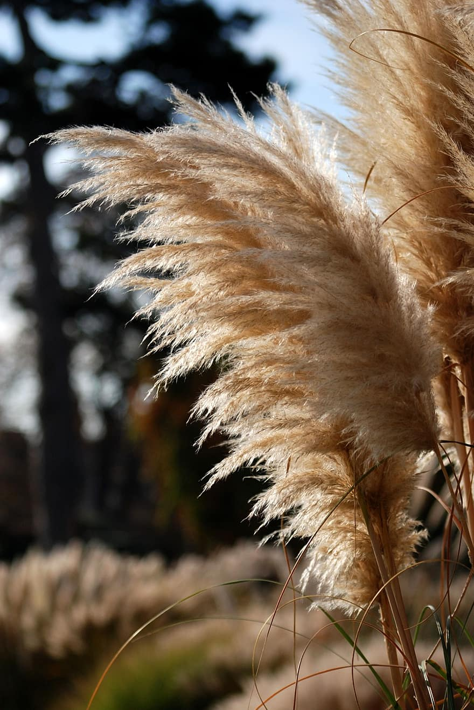

Ejemplo de maquetación con FLEX
by Alba Sedeño Riado para Diseño de Interfaces Web
Inicio
Galería
Productos
Clientes
Sobre nosotros
Contacto
Atardecer en contraste con las finas flores de las cañas de azúcar, conocidas como "Verolis"
Imagen de flor de la caña de azúcar
Flor a la luz del día
Verolis y desenfoque

Flor con gran enfoque